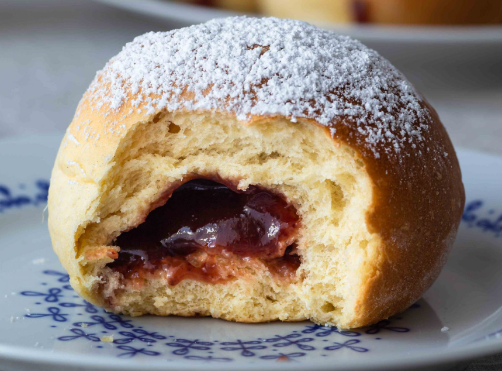

🎶 The Sound Archive of the Opera of Weirdness¶
Our researchers are tirelessly at work cataloging, studying, and occasionally arguing with the many marvelous sounds that echo across the universe.
All recorded sounds are released freely to all researchers — known, unknown, and unknowable — across every accessible and semi-accessible dimension.
📂 Sound Categories¶
The Opera categorizes its collected sounds based on their primary observable properties:
- 🎤 Vocal Phenomena (
voc-xxxx) — Utterances, speeches, melodic phrases. - 🌌 Ambient Backgrounds (
amb-xxxx) — Environmental soundscapes, cosmic murmurs. - 🎶 Musical Aberrations (
mus-xxxx) — Structured musical sequences, intentional or otherwise. - ⚡ Sound Effects (
sfx-xxxx) — Singular anomalies, pings, glitches, bursts. - 🌍 Physical Sound Events (
phy-xxxx) — Phenomena arising from interactions of matter, gravity, or dimensional shifts.
🧭 Latest Additions to the Archive¶
Full research report: 🎤 voc-17993 — Confused Confection of Velbora
🎤 voc-17993 — Confused Confection of Velbora¶
📍 Discovery¶
- Location: Outer Arm of the Andromeda Galaxy — System Krafft-9 — Planet Velbora — Bakery of Mistwreath & Sons
- Date Discovered: Estimated Cycle 772,413 (Earth Equivalent: approximately 47.652 years ago)
- Discovered By: Client of Mistwreath & Sons Bakery (identity redacted for pastry safety reasons)
📜 Research Report¶
A client of the renowned Bakery of Mistwreath & Sons discovered that applying precise pressure — using all thirty-six fingers on each Velboran hand — to a particular gelatinous confection caused it to emit a curious sound sounding like:
"Yckb'n-ein Jonefkendy"
This bizarre phenomenon captured immediate attention, as the emitted phrase bore no linguistic correlation to any known Velboran language systems.
🖼️ Image of voc-17993¶

Entity 7-B: The Confused Confection of Velbora
🔊 Sound Sample¶
🧪 Field Observations¶
- Response to Stimuli:
Emits the phrase when gently compressed along 12 specific microfaults. - Known Effects:
- Causes mild existential confusion among observers.
- Triggers spontaneous rhythmic bouncing in proximity.
- Mild mating call confusion among native Velborans.
- Security Status:
Currently secured in the Hall of Phonetic Anomalies, Pod C-17.
📖 Cultural Notes¶
Over subsequent 47,652 years after voc-17993 got discoverd in the bakery, this peculiar pastry — now classified as Entity 7-B: Confused Confection of Velbora — became a beloved novelty among the locals.
(The emitted phrase, incidentally, bears an uncanny resemblance to a vital component of the Velboran mating call.)
Following several incidents of diplomatic confusion, three minor wars, and a short-lived musical movement, the sentient pastry was graciously donated to the Opera of Weirdness, where it now resides in the Hall of Phonetic Anomalies.
📜 Conversation Logs¶
Location: Hall of Phonetic Anomalies — Section C
Personnel Involved: Cyanism (Research Assistant), Lucy the Cat (Senior Dimensional Sound Hunter)
[Transcript Excerpt]
Cyanism: (pausing) "Uh... why is there a Berliner in custody?"
Lucy: (without looking up) "None of your business."
(End of transcript.)
🎛 Classification Summary¶
- Sound Class: Phonetic Anomaly (Vocalization Type)
- Containment Difficulty: Low (subject is highly compliant)
- Current Status: Stored , Passive , Occasional Mutters About Political Legacy
🧩 Unsolved Questions / Additional Research Needed¶
- How does a gelatinous confection, composed primarily of flour, sugars, and synthetic jam analogs, manage to produce complex vocalizations without any observable vocal apparatus?
Leading Theories:
Existential Osmosis: Due to prolonged exposure to intelligent beings, the pastry absorbed ambient cultural data, leading to spontaneous phrase generation (a phenomenon known in theoretical circles as "Ambient Cognitive Seepage").
🎭 Opera perfomances utilizing this sound:¶
N/A
🧁 Chef scientist notes¶
Since my pet recognized a similar pastry on Earth we should send an expedition troup to find out if "Yckb'n Ein Jonefkendy" is of relevance for Earthlings.
-Lucy
Why don't you just ask your assistant?
-Zebulon
Stop using the note sections as direct message replacements Zebulon!
-Lucy
(InProgress) 🌌 amb-40210 — Whispering Dunes of Gexlar
(InProgress) 🎶 mus-31045 — Bioluminescent Ballad
(InProgress) ⚡ sfx-21901 — Quantum Snap Reverb
(InProgress) 🌍 phy-50113 — Gravity Well Collapse
📋 Archive Expansion Plans¶
Our ongoing research efforts aim to uncover and document:
- The melancholic echoes of collapsing sunflowers (believed to exist on Planet Thryxx)
- The debated existence of the so-called "Laughing Void" anomaly
- A sound that can allegedly reset minor timelines if whistled off-key
Further updates pending the return of the next Research Expeditionary Team (expected 3.7 millennia ago).
📜 Access Guidelines¶
Researchers are encouraged to explore and study all listed sounds.
Unauthorized attempts to remix, weaponize, or bake with sound anomalies are strictly prohibited.
Please consult your local Multiversal Ethics Board if in doubt.
(Or if you accidentally become a musical instrument.)
🧹 Maintenance Note¶
Remember:
"If you hear sounds that aren't listed, run.
Or bring a notebook. Either is acceptable."